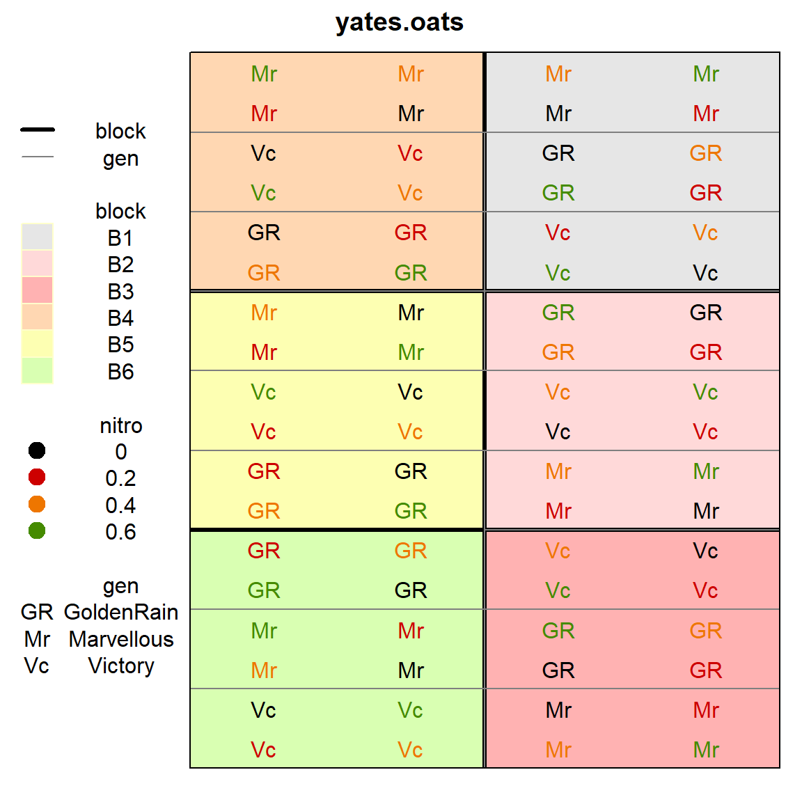
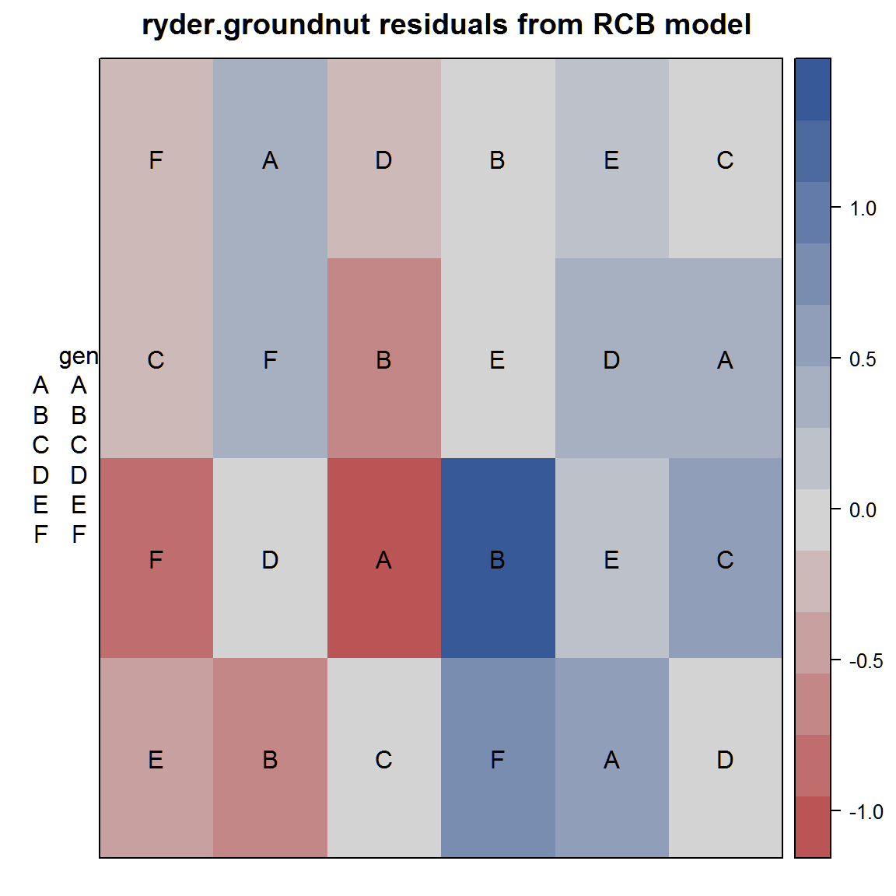

../../../../../x/rpack/desplot/vignettes/desplot_examples.Rmd
desplot_examples.RmdThis short note shows how to plot a field map from an agricultural experiment and why that may be useful.
library("knitr") knitr::opts_chunk$set(fig.align="center", fig.width=6, fig.height=6) options(width=90)
First, a plot of the experimental design of the oats data from Yates (1935).
library(agridat) library(desplot) data(yates.oats) # Older versions of agridat used x/y here instead of col/row if(is.element("x",names(yates.oats))) yates.oats <- transform(yates.oats, col=x, row=y) desplot(yates.oats, block ~ col+row, col=nitro, text=gen, cex=1, out1=block, out2=gen, out2.gpar=list(col = "gray50", lwd = 1, lty = 1))

This next example is from Ryder (1981). Fit an ordinary RCB model with fixed effects for block and genotype. Plot a heatmap of the residuals.
library(agridat) library(desplot) data(ryder.groundnut) gnut <- ryder.groundnut m1 <- lm(dry ~ block + gen, gnut) # Standard RCB model gnut$res <- resid(m1) desplot(gnut, res ~ col + row, text=gen, cex=1, main="ryder.groundnut residuals from RCB model")
 Note the largest positive/negative residuals are adjacent to each other, perhaps caused by the original data values being swapped. Checking with experiment investigators (managers, data collectors, etc.) is recommended.
Ryder, K. 1981. “Field Plans: Why the Biometrician Finds Them Useful.” Experimental Agriculture 17: 243–56. https://doi.org/10.1017/S0014479700011601.
Yates, Frank. 1935. “Complex Experiments.” Journal of the Royal Statistical Society Suppl 2: 181–247. https://doi.org/10.2307/2983638.